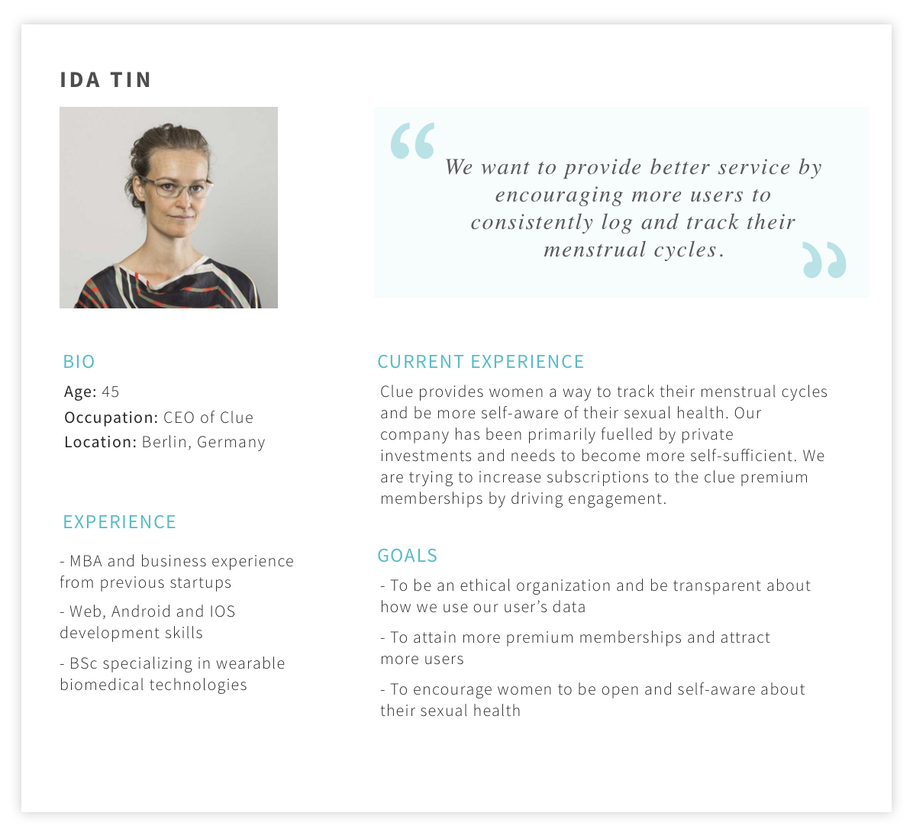

We started by gaining insights regarding pain points women face on their periods
We talked to 5 women about their experiences with periods, what makes them hard or inconvenient and what they do to make their periods more manageable. We also read through Clue's reviews on the app store to find out what the users liked and disliked about the app. From our research, we realized that the needs of women who experience strong PMS symptoms differ from women who don’t. Form these insights, we created two personas.
Lynda is a 32 year-old Event planner who experiences strong PMS symptoms and wants to keep track of activities that may exacerbate them while Merissa is a 20 year-old college student who wants to make sure that she is prepared for her period.
Next, we began research on Clue's vision as an organization and its stakeholders' goals
We explored Clue’s website, read through news-letters and researched it's CEO, Ida Tin to better understand Clue's vision for its users. From our research, we created a stakeholder persona for Ida Tin that represents the interests of the organization as a whole.
Based on the exploratory research findings, we proposed three features
1. Clue S.O.S
Not having menstrual products on hand when your period cycle begins is an extremely stress inducing situation. CLUE S.O.S acts as a safety net for women in this situation by allowing them to contact and ask their friends or women in close proximity for menstrual products.
2. Clue Journal
PMS symptoms can be daunting and debilitating for many women. Clue Journal allows women to record not only their period symptoms but also activities that may cause or exasperate them within the app.
3. Clue Forum
Clue Forum creates a social forum within Clue where women can talk about sexual health topics, explore what other women experience and educate themselves about their own sexual health.
While Clue Forum and Clue Journal both addressed user frustrations, forums and note taking applications were common place. There were many UI libraries and examples we could take from. Clue S.O.S presented the most interesting and challenging design opportunity. Not only was it harder to find similar interfaces to take inspiration from, it addressed frustrations of both women with and without strong PMS symptoms.
So, we decided to design for Clue S.O.S.
We started understanding Clue's interface by identifying core features...
This would allow us to determine Clue S.O.S' place in Clue's existing interface.
1. Your Current Cycle
Shows users a monthly view of their cycle allowing them to get information about their menstrual cycle and fertility window at a glance.
2. Analysis
Allows users to spot trends and outliers regarding specific aspects of their sexual health like fertility, period length, PMS, cravings, cramps etc.
3. Calendar
Allows users to view all their past cycles and three future cycles based on predictions. This allows them to analyze their menstrual history, detect patterns and plan for the future.

4. Data Input
Users can input information about their flow, mood, cramps and more. This allows Clue to make predictions about when their next period will be.
Next, we identified Clue's core UI patterns
Incorporating Clue's existing UI patterns into Clue S.O.S would integrate Clue S.O.S within the existing interface seamlessly. Our research of Clue's interface revealed that Clue uses color extensively for the following purposes:
1. Creating Pointers
Color is used to indicate the kind of information users are looking at. For e.g. on the "Your Current Cycle" diagram, red and blue represent period and fertility. Green on the other hand, represents the current date and/or a point where the user can add information.
These color indicators are repeated on the "Analysis" and "Calendar" screens as well.
2. Creating Categories
Clue uses color to categorize tracking options. For e.g. red represents period tracking, blue represents tracking changes in your body etc.
3. Establishing Hierarchy
Clue uses color sparingly in most cases in order to establish hierarchy and draw the user's eye towards what is most important on a certain screen.
On the "Analysis" page, highly saturated blues, reds and greens are used on a muted gray color to bring up certain aspects of the interface in hierarchy.
With a complete understanding of Clue's UI patterns, we started wireframing Clue S.O.S' workflow.
1. Accessing Clue S.0.S
Users can send an S.O.S from the home screen i.e. the "Your Current Cycle" screen. The “i” button on the upper right corner has been relocated to the more information section and has been replaced by Clue S.O.S' life raft logo.
Clue asks the user permission to access their location when they access the feature for the first time. Once the user allows Clue to track their location, they are greeted with a list of Clue users with their names, distance and the kind of menstrual product they use. Clue S.O.S only shows people that the user has added into Clue initially.
2. Using the Global S.O.S
Users can turn on the Global S.O.S feature in order to seek help from clue users that may not be in their friend list if need be. They can also search for specific people in their lists.
3. Sending an S.O.S to One Person
Users must add their location to send an S.O.S. They can also add a personalized message regarding a room number or other specific instructions if need be.
4. Sending an S.O.S to Multiple People
Users can send an S.O.S to multiple people at a time by tapping and holding on a person's name and selecting them. The state of the life raft changes to a tick to let the user know that their S.O.S has been accepted.
5. Receiving an S.O.S
On the receiver's side, the S.O.S pops up as a notification. Tapping on the notification takes the user to a message board where they can first either accept of decline the S.O.S.
Reflection
Our team realized early on that creating features for existing interfaces calls for a different set of priorities. What we didn't anticipate was how time consuming creating taskflows that everyone agreed on would be. That said, the differing opinions and open communication made for a much richer pool of ideas.